آواز ستارهها
چهار آهنگ، یک سفر. از کویر تا دریا.
پیشدرآمد: Kahkeshan، آسمانی که ستاره از آن میآید
سفر را دنبال کن
01سفر ستاره
منزل یکم
مهر
Mehr02داستان ستاواز
آواز یک ستاره
ستاواز از دو کلمه آمده: ستاره و آواز.
ستارهٔ طلایی لوگو مسافر ماست. هر آهنگ یک منزل از راه اوست، از کویر تا دریا.
ساز ایرانی
ضرب امروزی
نقش گره
03همهجا بشنو
هر جا گوش میدهی
آهنگها کمکم به همهٔ سرویسها میآیند.
04خبرم کن
وقتی آهنگ تازه آمد
یک ایمیل کوتاه میگیری. همین.